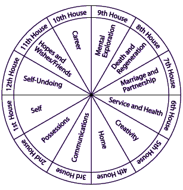
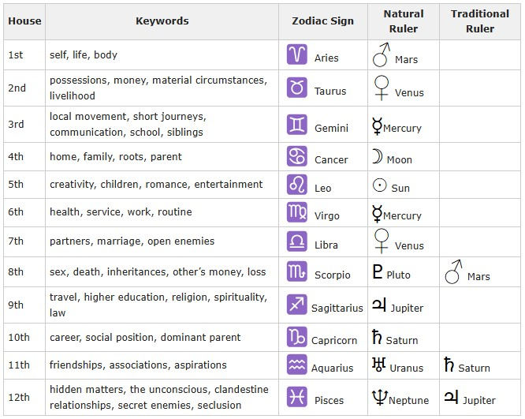

12 Astrological Houses
The 12 Houses of astrology are arranged on a circle-shaped chart, or wheel.Do not confuse the wheel of Houses with the zodiac wheel. They are 2 different wheels.
1.The zodiac wheel is based on the sun’s apparent yearly rotation about our Earth, along the ecliptic.
2.The wheel of Houses is based on our Earth’s 24-hour rotation about its own axis.
The 2 wheels join together at points derived by calculations involving your exact birth time and astronomical birth coordinates.Then, the planets are described in 2 ways: as being in a zodiac sign, and also as being in a House.
For example, two people may both have a Libra Sun sign, but one may have the Libra Sun in his 12th House, while the other may have his Libra Sun in his 1st house. This could make for two very different types of people.(Another reason why the popular daily Sun Sign Horoscopes are a bunch of silliness: they are written assuming everyone has their Sun in the 1st House.)
The 12 Houses of astrology are symbolic of the all the departments that make up human life. The planets and zodiac signs will manifest themselves most strongly in the sphere of life represented by the House in which they fall on your chart (and also in the House which they rule)
Remember, the houses are not “energies” like the elements or planets, nor do they color the expression of energies like the zodiac signs do. The houses are WHERE these energies are most likely to manifest. The houses are the fields of experience, not the experience themselves.
Notice how the order of the Houses follows the developmental path of a human’s life, from the original impulse of individual being (1st house), to learning what is “mine” and how to use what one owns (2nd house), to learning how to communicate within the limitations set by our environment (3rd house), etc. The following description of the Houses are short and topical, directed at beginners.
The most important houses are the 1st, 4th, 7th, and 10th houses. These are called the "angular houses" because their cusps coincide with the 4 special angles: ascendant, I.C., descendant, and M.C.. Planets in the angular houses will influence you the most.
1st Astrological House
The first House is the House of self. This includes self-awareness, the physical body, personality, appearance, personal views on life, self-identity, self-image, early environment, and beginnings; how we initiate, how we’re impulsive. Any planets in this house will greatly influence your personality and how others perceive you.
2nd Astrological House
The second House refers to your own money and possessions, what you value, your hidden talents, sense of self-worth, self-esteem (how you value yourself, instead of describing your personality as in the 1st House). Possessions include anything a person owns (except the house/home which is ruled by the 4th House): cars, furniture, clothing, moveable property, investments and securities, etc. The 2nd house specifies how you gain and spend your own money (as opposed to other's money in the 8th house), your attitude towards wealth and material possessions, and your potential for accumulating it/them.
3rd Astrological House
The third House is that of communication, which by extension includes one's immediate environment: siblings, neighbors, short journeys, and all forms of transportation. The 3rd house also includes the intellect, the lower mind (details and small bits of information as opposed to the higher mind in 9th house), thinking patterns, and early education (before college). Communication includes messages, deliveries, gossip, phone calls, visits, reading and writing.
4th Astrological House
The fourth House refers to the home and everything associated with it (both the childhood home & the current home): family, land, personal foundations (inner emotional security), your roots. Astrologers are divided over whether this house is associated with one's mother or father. What is clear is that a person's upbringing is associated with this House.
On a deeper level, the 4th house is the base of consciousness or the center of our concrete existence. See how the cusp of the 4th house is the I.C., the lowest point on the chart, representative of things below the surface of Earth. Due to that, the 4th house was believed to rule the conditions at the end of life, and graves. As the root or base of your real self, the 4th house rules where you go when you "die" but also where you came from. For those who believe in reincarnation, the 4th house would give clues to your karmic lesson for this lifetime. It shows what karmic baggage you brought with you into this life. Even if you don't believe in reincarnation, you're likely to be surprised by what you find in your 4th house for it may move your soul.
Any planets in the 4th house affect your home life, your emotions, your subconscious, and possibly your relationship with your parents.
5th Astrological House
The fifth House refers to children, creativity, and the pursuit of pleasure. This includes personal interests, love affairs, sports, hobbies, speculation, risk-taking, teaching, drama, creative self-expression, love given, gambling. The 5th house is all about you being yourself and enjoying it.
Romance, dating, love affairs, and sexual relationships are ruled by this 5th house, yet marriage is assigned to the 7th. Why? Because, until very recently, marriage was not entered into for pleasure, for love, nor for personal fulfillment. Marriage was hardly even entered into by choice, but rather for the purpose of raising kids to preserve the values of a particular culture or religion. And these marriages were most often arranged according to class and financial status, a partnership befitting the 7th house.
Nowadays, it's common to marry for love. To avoid confusion, remember: affairs of the heart are in the 5th house, but cooperative partnerships are in the domain of the 7th house.
6th Astrological House
The sixth House refers to daily work, service, diet, health and physical sickness, physical ability to work, employees. This includes volunteer labor, civil service work, caretaking, and mundane daily tasks. The 6th house really involves the quality of your work, the quality of the jobs you perform, as opposed to an actual career (career is represented by the 10th house). Daily mundane tasks include personal hygiene and our method of responding to everyday crises.
7th Astrological House
The seventh House is sometimes referred to as the House of marriage, but it encompasses all one-to-one relationships: marriage, business partnerships, contracts, cooperative relationships, and also divorce, separation, quarrels, open enemies, and law suits.
The difference between the love affairs of the 5th House and love relationships of the 7th is that the 7th House refers to more permanently binding relationships, whereas the 5th House refers to affairs that may be temporary. When the 5th House affair progresses into a serious relationship, we can say that the relationship has "moved into the 7th House."
7th house relationships are about cooperation and sharing, and they generally serve some functional purpose in the larger social community (i.e. a marriage). This is different from a 5th house love affair, whose only qualification is "butterflies in the stomach."
The 7th house includes the way you relate to those closest to you. Planets in this house will influence your manner of relating. They also give clues to issues that arise in your relationships.
8th Astrological House
Simply put, the 8th house is the polar opposite of the 2nd house. Whereas the 2nd rules your own individual possessions, the 8th house rules what a relationship owns (joint finances).
The 8th House is one of the most misunderstood Houses. This is probably because the things represented by the 8th House seem to have nothing in common with each other, or they seem to be negative. This House governs death, regeneration, taxes, inheritances, wills & legacies, sex (the actual act of sex), latent occult ability, joint resources, your partner’s money and possessions, spouse's money, bankruptcy, losses, personal sacrifices, alimony, clairvoyance.
On a positive note, this House is about transformation and healing. But transformation and healing require some type of death, loss, or injury first. This House rules those processes and things by which we transform and become more powerful. Yes, this includes the act of sex.
9th Astrological House
The ninth House refers to philosophy, religion, law, learning, higher education (as opposed to early education by the 3rd House), ethics, morals, long journeys, travel, foreign countries and interests, spiritual urges, dreams, visions, higher mind, ideas, understanding and wisdom, books, publishing, ceremonies, and rituals. This is the House of big thoughts and big ideas.
9th house "understanding" is more complex than 3rd house "knowledge". The act of "knowing" belongs to the 3rd house because it implies simply the direct contact of a person with something in his environment. Understanding involves the synthesis of known data.
While the 3rd house refers to an individual's need to understand his close and personal environment, the 9th house is an area in which one seeks to discover the significance of larger fields of social existence which one may not experience directly but which his mind may explore through the use of analogy, generalization and abstraction. The 3rd and 9th houses symbolize the 2 polarities of the human mind, the concrete and the abstract.
In summary, the 9th house includes experiences that we encounter when we search for the meaning of things. Whatever expands your field of activity or the scope of your mind – long journeys, contact with other cultures, great dreams, and even experiences with fortunetellers.
10th Astrological House
The tenth House is the House of status, honor, community power, prestige, reputation, and professional career. In our society, this includes financial success, but only as it relates to community power and prestige. It's not about gaining "material stuff" as it is in the 2nd house. The 10th house wants success for the sake of honor and social status.
This house includes social foundations (as opposed to personal home foundations in the 4th), recognition, personal achievements, social responsibilities, sense of duty, authority figures, politicians. This House encompasses the most public areas of one's life, and the career that you grow into, as opposed to daily work and odd jobs ruled by the 6th House.
As with the 4th House, astrologers are divided over whether the 10th House rules one's mother or father. Those that say the 4th House rules the mother, say the 10th House rules the father, and vice versa. What is clear is that the 4th House rules the nurturing, home-body parent, while the 10th House rules the public, success-focused parent (the parent who "wears the pants").
As with the other angular houses, any planets in this house are very important. Planets in the 10th house, the sign on the cusp of the 10th house, and its ruling planet will greatly influence your career and your general reputation in public.
11th Astrological House
The eleventh House is the House of community, large groups, and friends. It refers to memberships, hopes, goals, ambitions, wishes, social groups, associations, humanitarian interests. It also refers to self-realization, liberty, legislation and regulation.
12th Astrological House
This is probably the most misunderstood house of all. The twelfth House refers to the subconscious, the hidden self that exists apart from our physical everyday reality. This includes the unconscious mind, subconscious memory, subconscious habit patterns from the past, mental illness, karmic debts, self-deception, escapism, spiritual realization, limitations, frustration, and ultimately our self-undoing.
On a physical, material level, the 12th house includes things that take us away from everyday life: institutions (such as hospitals, prisons, government offices), places of confinement, secrets, secret relationships, hidden enemies, and self-sacrifice for others. It also refers to sorrow, tribulations, widowhood, grief, funerals, exile, seclusion, bribery, subversion, murder, suicide, kidnapping, and endings.
For those who believe, the 12th house is also considered to refer to the collective unconscious of all humanity.
 